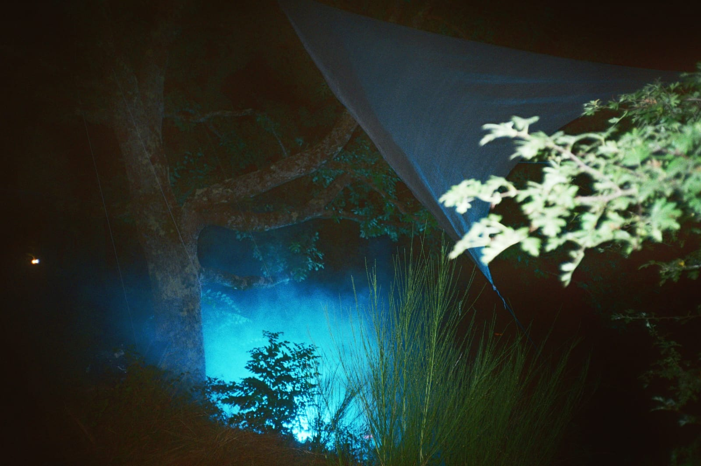
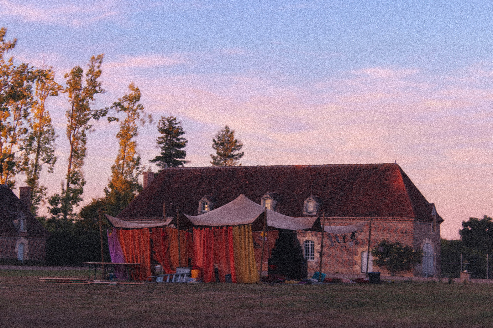
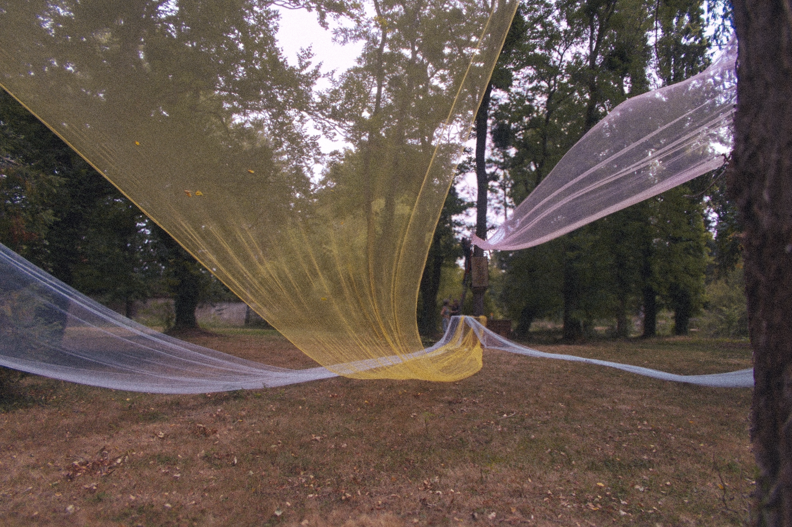
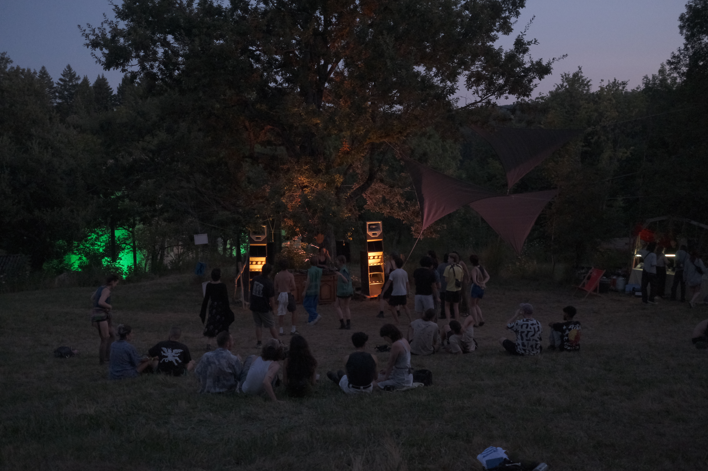
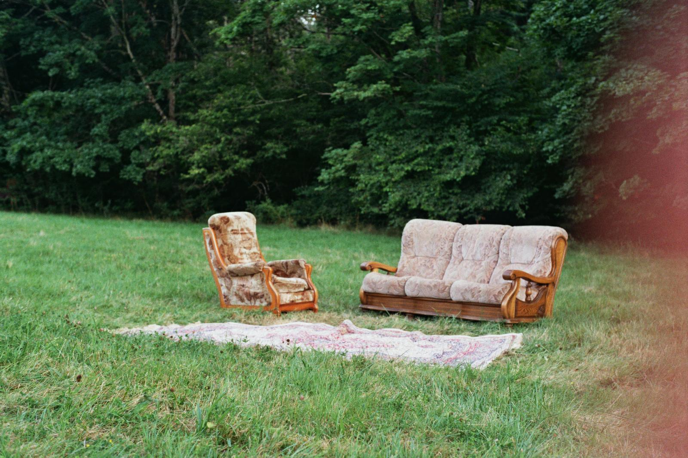
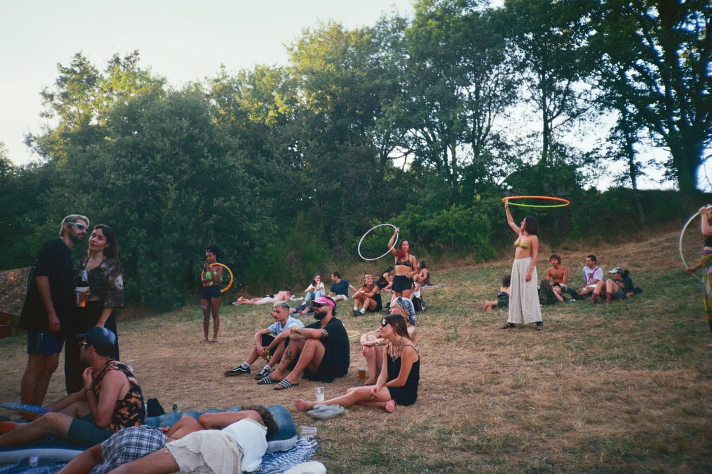
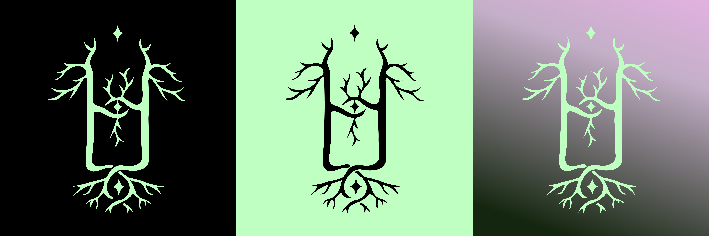
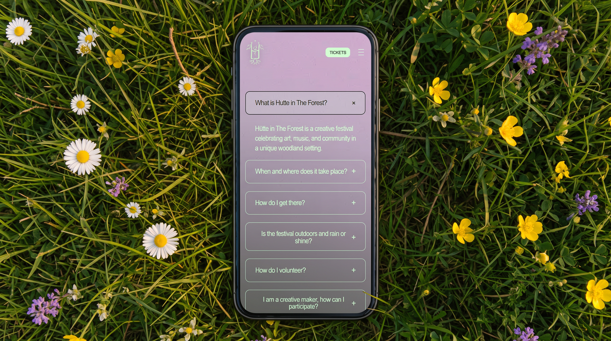
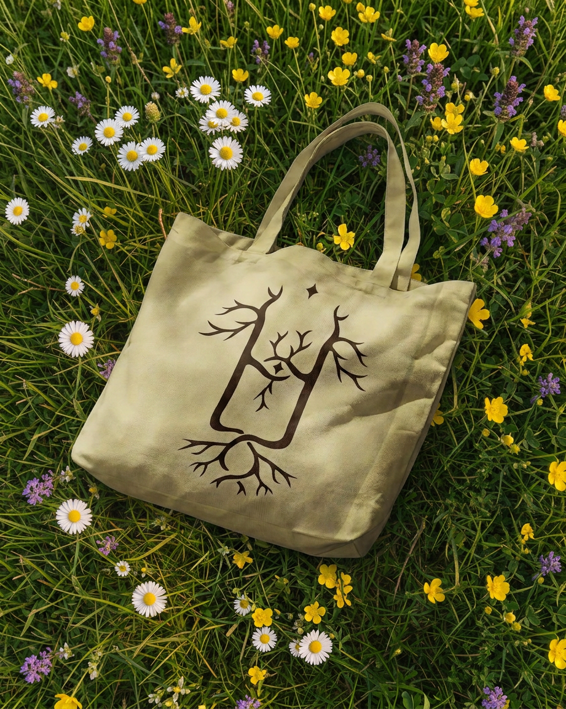

Hütte in the
Forest
Visit website
A visual identity and digital experience for an independent festival where music, art, nature, and community come together.
Concept
Hütte in the Forest is an independent festival that brings together music, art, performance and people in the middle of nature. More than a music event, it is a temporary environment where different forms of creative expression coexist, encouraging connection, exploration and collective experiences.
Challenge
The challenge was to develop a new visual identity that could capture the distinctive atmosphere of Hütte in the Forest.
Rather than starting from an abstract visual direction, the identity grew from the festival itself. I drew inspiration from its natural surroundings, the energy of its community, and especially from the analogue photographs I took during the 2024 and 2025 editions.






Colour palette

Digital experience
The new identity was translated into the digital experience through the Hütte in the Forest website, creating a visual environment that reflects the character of the festival while making its programme, activities and information easy to explore.


Promo Artist
Before developing the new visual identity, I also contributed to Hütte's communication through a series of promotional videos for the 2025 edition.
Personal Reflection
Hütte was not only a project I designed for, but an environment I became part of. Alongside developing the visual identity and digital experience, I joined the 2025 edition as a set designer, contributing to the visual and spatial atmosphere of the festival stages. Working across both digital and physical dimensions allowed me to experience the identity from the screen to the space, from graphic elements to the environments in which people gathered, danced and connected.
